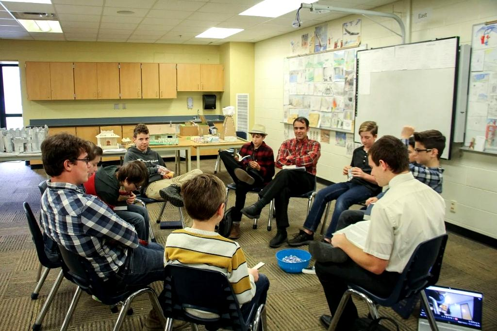

Ages 0–2
Hope Nursery
A safe, loving environment for your littlest ones while you worship. Our trained caregivers ensure your baby is happy and cared for every Sunday.
- ✅ Clean, safe certified space
- ✅ Trained & background-checked caregivers
- ✅ Pager system so you worship with peace of mind

Kids & Youth
Sunday School
The kids and youth of our church have Sunday School classes they attend immediately following the service on Sunday morning. Age-appropriate Bible teaching in a fun, engaging environment where every child learns that God loves them.
- ✅ Immediately following Sunday service
- ✅ Age-appropriate Bible teaching
- ✅ Fun worship music & activities
- ✅ Secure check-in system
Friday Nights
iFire Youth Bible Study
iFire is a ministry that is hosted and directed by the parents of Hope Church. It is a training ground for the young people of our church, who become grounded in the Scriptures and learn practical skills for Christian living.
The youth who attend iFire are serious about Christian discipleship and are being equipped to make an impact in their generation.
- 🔥 Every Friday at 6:30 PM
- 📍 2100 Ellsworth Rd, Ypsilanti, MI 48197
- ✅ Grounded in Scripture
- ✅ Practical skills for Christian living
- ✅ Parent-hosted & directed